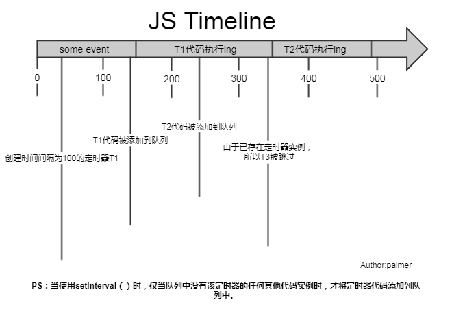
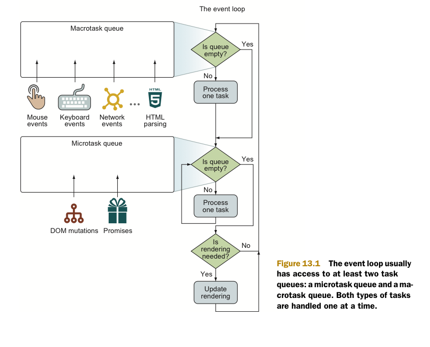
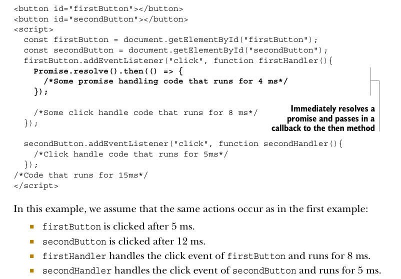
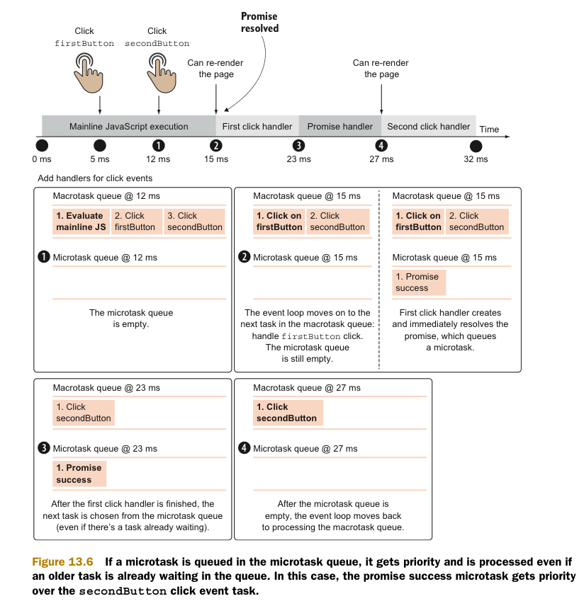
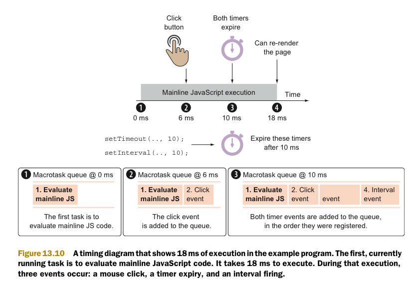

从Event Loop谈JS的运行机制
- JS分为同步任务和异步任务
- 同步任务都在主线程上执行，形成一个执行栈
- 主线程之外，事件触发线程管理着一个任务队列，只要异步任务有了运行结果，就在任务队列之中放置一个事件。
- 一旦执行栈中的所有同步任务执行完毕（此时JS引擎空闲），系统就会读取任务队列，将可运行的异步任务添加到可执行栈中，开始执行
setTimeout而不是setInterval
用setTimeout模拟定期计时和直接用setInterval是有区别的。
因为每次setTimeout计时到后就会去执行，然后执行一段时间后才会继续setTimeout，中间就多了误差（误差多少与代码执行时间有关）
而setInterval则是每次都精确的隔一段时间推入一个事件
（但是，事件的实际执行时间不一定就准确，还有可能是这个事件还没执行完毕，下一个事件就来了）
而且setInterval有一些比较致命的问题就是：
累计效应（上面提到的），如果setInterval代码在（setInterval）再次添加到队列之前还没有完成执行，就会导致定时器代码连续运行好几次，而之间没有间隔。
就算正常间隔执行，多个setInterval的代码执行时间可能会比预期小（因为代码执行需要一定时间）
譬如像iOS的webview,或者Safari等浏览器中都有一个特点，在滚动的时候是不执行JS的，如果使用了setInterval，会发现在滚动结束后会执行多次由于滚动不执行JS积攒回调，
如果回调执行时间过长,就会非常容器造成卡顿问题和一些不可知的错误（这一块后续有补充，setInterval自带的优化，不会重复添加回调）
而且把浏览器最小化显示等操作时，setInterval并不是不执行程序，它会把setInterval的回调函数放在队列中，等浏览器窗口再次打开时，一瞬间全部执行时
所以，鉴于这么多但问题，目前一般认为的最佳方案是：用setTimeout模拟setInterval，或者特殊场合直接用requestAnimationFrame

上图可见，setInterval每隔100ms往队列中添加一个事件；100ms后，添加T1定时器代码至队列中，主线程中还有任务在执行，所以等待，some event执行结束后执行T1定时器代码；
又过了100ms，T2定时器被添加到队列中，主线程还在执行T1代码，所以等待；又过了100ms，理论上又要往队列里推一个定时器代码，但由于此时T2还在队列中，所以T3不会被添加，
结果就是此时被跳过；这里我们可以看到，T1定时器执行结束后马上执行了T2代码，所以并没有达到定时器的效果。
综上所述，setInterval有两个缺点：
使用setInterval时，某些间隔会被跳过；
可能多个定时器会连续执行；
macrotask和microtask
- macrotask（又称之为宏任务），可以理解是每次执行栈执行的代码就是一个宏任务（包括每次从事件队列中获取一个事件回调并放到执行栈中执行）
- 每一个task会从头到尾将这个任务执行完毕，不会执行其它
- 浏览器为了能够使得JS内部task与DOM任务能够有序的执行，会在一个task执行结束后，在下一个 task 执行开始前，对页面进行重新渲染
（task->渲染->task->...）
- microtask（又称为微任务），可以理解是在当前 task 执行结束后立即执行的任务
- 也就是说，在当前task任务后，下一个task之前，在渲染之前
- 所以它的响应速度相比setTimeout（setTimeout是task）会更快，因为无需等渲染
- 也就是说，在某一个macrotask执行完后，就会将在它执行期间产生的所有microtask都执行完毕（在渲染前)
分别很么样的场景会形成macrotask和microtask呢？
macrotask：主代码块，setTimeout，setInterval,setImmediate, requestAnimationFrame, I/O, UI rendering等（可以看到，事件队列中的每一个事件都是一个macrotask）
microtask：Promise，process.nextTick, Object.observe, MutationObserver
补充：在node环境下，process.nextTick的优先级高于Promise，也就是可以简单理解为：在宏任务结束后会先执行微任务队列中的nextTickQueue部分，然后才会执行微任务中的Promise部分。
另外，setImmediate则是规定：在下一次Event Loop（宏任务）时触发（所以它是属于优先级较高的宏任务），（Node.js文档中称，setImmediate指定的回调函数，总是排在setTimeout前面），所以setImmediate如果嵌套的话，是需要经过多个Loop才能完成的，而不会像process.nextTick一样没完没了。
参考：https://segmentfault.com/q/1010000011914016
再根据线程来理解下：
macrotask中的事件都是放在一个事件队列中的，而这个队列由事件触发线程维护
microtask中的所有微任务都是添加到微任务队列（Job Queues）中，等待当前macrotask执行完毕后执行，而这个队列由JS引擎线程维护
（这点由自己理解+推测得出，因为它是在主线程下无缝执行的）
所以，总结下运行机制：
执行一个宏任务（栈中没有就从事件队列中获取）
执行过程中如果遇到微任务，就将它添加到微任务的任务队列中
宏任务执行完毕后，立即执行当前微任务队列中的所有微任务（依次执行）
当前宏任务执行完毕，开始检查渲染，然后GUI线程接管渲染
渲染完毕后，JS线程继续接管，开始下一个宏任务（从事件队列中获取）



There’s one important point that we need to emphasize. After a macrotask gets executed,
the event loop immediately moves onto handling the microtask queue, without allowing rendering until the microtask queue is empty.
a re-render can occur between two macrotasks, only if there are no microtasks in between.
In our case, the page can be rendered between the main- line JavaScript execution and the first click handler,
but it can’t be rendered immediately after the first click handler,
because microtasks, such as promise handlers, have priority over rendering.
A render can also occur after a microtask, but only if no other microtasks are wait- ing in the microtask queue.
In our example, after the promise handler occurs, but before the event loop moves onto the second click handler, the browser can re-render the page.

When the initial block of code ends execution at 18 ms, three code blocks are queued up for execution: the click handler, the time-out handler,
and the first invocation of the interval handler. This means that the waiting click handler (which we assume takes 10 ms to execute) begins execution.
Unlike the setTimeout function, which expires only once, the setInterval func- tion fires until we explicitly clear it.
So, at around 20 ms, another interval fires. Normally, this would create a new task and add it to the task queue.
But this time, because an instance of an interval task is already queued and awaiting execution, this invocation is dropped.
The browser won’t queue up more than one instance of a specific interval handler.
setTimeout(function repeatMe(){
/* Some long block of code... */
setTimeout(repeatMe, 10);
}, 10);
setInterval(() => {
/* Some long block of code... */
}, 10);
Sets up a time-out that reschedules itself every 10 milliseconds
Sets up an interval that triggers every 10 milliseconds
13.2.2
The two pieces of code may appear to be functionally equivalent, but they aren’t.
Notably, the setTimeout variant of the code will always have at least a 10 ms delay after the previous callback execution
(depending on the state of the event queue, it may end up being more, but never less),
whereas setInterval will attempt to execute a callback every 10 ms regardless of when the last callback was executed.
And, as you saw in the example from the previous section, intervals can be fired immediately one after another, regardless of the delay.
As you know, a single event can trigger the execution of multiple event handlers, where each handler can be in either capturing or bubbling mode.
For this reason, the event first goes through capturing,starting from the top element and trickling down to the event target element.
When the target element is reached, bubbling mode is activated, and the event bubbles from the target element all the way back to the top.
In our case, capturing starts from the top, window object and trickles down to the innerContainer element,
with the goal of finding all elements that have an event han- dler for this click event in capturing mode.
Only one element, outerContainer, is found, and its matching click handler is executed as the first event handler.
The event continues traveling down the capturing path, but no more event handlers with capturing are found.
After the event reaches the event target element, the innerContainer element, the event moves on to the bubbling phase,
where it goes from the target element all the way back to the top, executing all bubbling event han- dlers on that path.
this keyword in event handlers, and why we explicitly stated that the this keyword refers to the element on which the event handler is registered,
and not necessarily to the element on which the event occurs.(事件处理函数中的this指的是注册这个函数的对象，而非事件源)